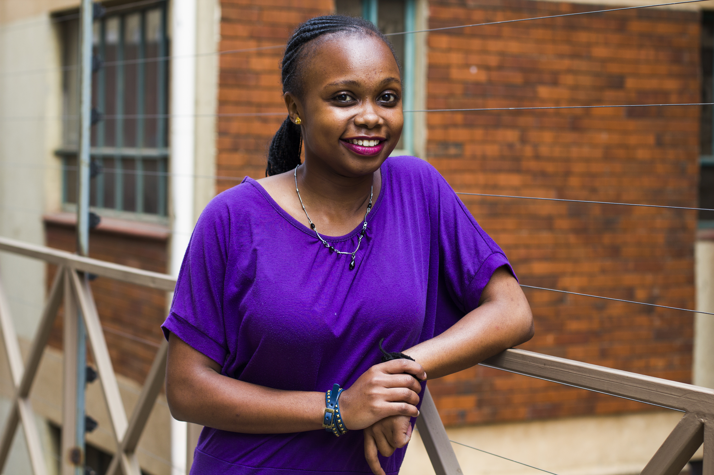

My names are Kiragu Winnie aka Troy!. I am a young lady, who is madly passionate about Tech!...
I have quite the humble background and have studied Computers since high schhol. I wouldnt say that I was always passionate about tech, back as a young'n there wasnt much tech to even be passionate about, but as tech grew, my interest and curiosity grew with it as well.
My life in tech is exciting, beautiful and tormenting at times! ...hehee... but they say that if you your dreams, goals and passions dont scare you, then you aren't dreaming high enough, or passionate enough!...